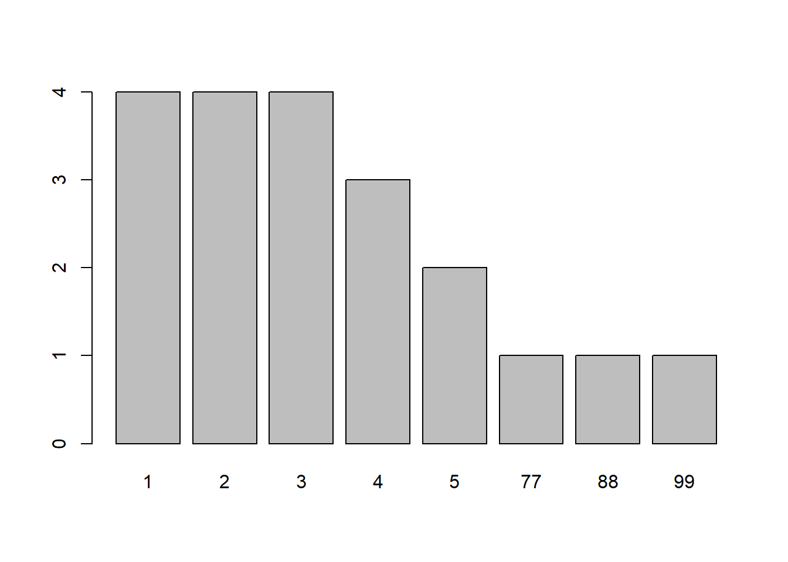
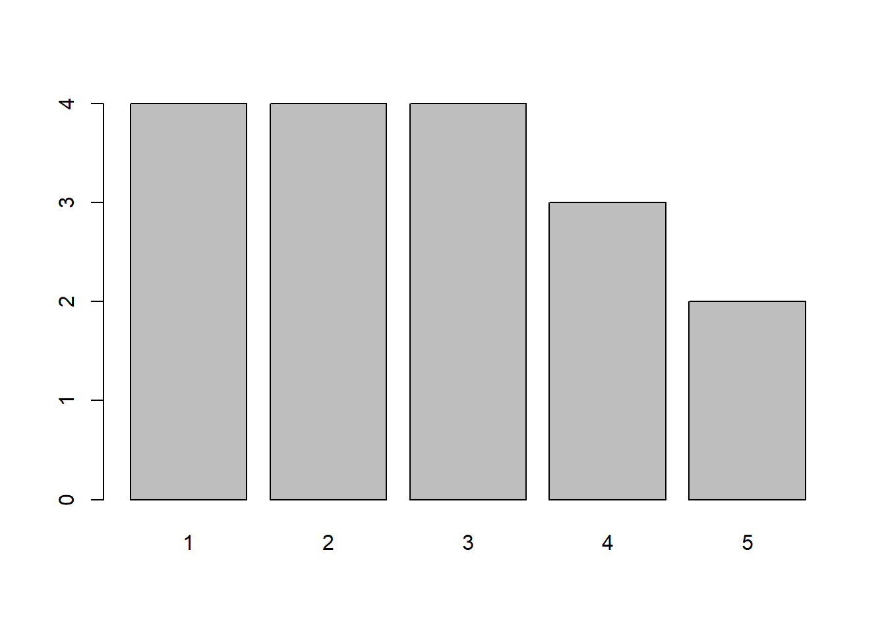

day <- c("Sun", "Mon", "Tue", "Wed", "Thur", "Fri", "Sat") # creating a vector: days of the week
temp <- c(32.3, 38.7, NA, 40.1, 37.6, 33.5, 31.7) # creating a vector: temperature readings
mile <- c(3.4, 4.5, 5.5, 5.5, NA, 4.2, 4.5) # creating a vector: miles run per day
week <- data.frame(day, temp, mile) # creating a data frame with three variables: "day", "temp", "mile"6 Missing Data
In R, missing data is represented by NA, which stands for “Not Available.” There can be many reasons for missing data. For example, a participant may have skipped a question on purpose or by accident, and therefore has no recorded value on a given variable.
Missing data is a problem that we encounter frequently in data analysis.
6.1 Dealing with missing data
Let’s create a made-up data set (also called a toy dataset) to use as an example for this tutorial.
The data frame, week, consists of three variables:
day: day of the weektemp: temperature reading for each day in degrees Celsiusmile: miles run per day
Assume the thermometer broke on Tuesday so temp data for that day is missing. On Thursday, I forgot to log the number of miles I ran so that data point is also missing.
Run the following lines in R to create the data frame week:
To view the data frame in R, type week in the Console.
The data frame should look like this:
| day | temp | mile |
|---|---|---|
| Sun | 32.3 | 3.4 |
| Mon | 38.7 | 4.5 |
| Tue | NA | 5.5 |
| Wed | 40.1 | 5.5 |
| Thur | 37.6 | NA |
| Fri | 33.5 | 4.2 |
| Sat | 31.7 | 4.5 |
You can also view the names and types of the variables in this data frame:
names(week)[1] "day" "temp" "mile"str(week)'data.frame': 7 obs. of 3 variables:
$ day : chr "Sun" "Mon" "Tue" "Wed" ...
$ temp: num 32.3 38.7 NA 40.1 37.6 33.5 31.7
$ mile: num 3.4 4.5 5.5 5.5 NA 4.2 4.5Suppose we are interested in the average temperature for the week. To compute the mean, we use the function mean().
mean(week$temp)The ouput from the function above is:
[1] NAThat is because the variable temp contains one missing value NA, and in the command above, we did not tell R what to do with the missing value. Now, we will consider two ways of handling missing data.
6.1.1 Use the (, na.rm = TRUE) argument
One way to handle missing data in a function such as mean() is to simply tell R what to do with the missing data. In the code chunk below, we are asking R to remove the NA values from the calculation.
mean(week$temp, na.rm = TRUE)[1] 35.65So, the average temperature for the week excluding Tuesday is 35.65.
na.rmis a logical value indicating whether NA values should be stripped before the computation proceeds.
By default na.rm = is set to FALSE. You will need to specify it as TRUE to let R know that you would like the NAs to be ignored by the command (i.e., NAs still exist in the data; they are just not included in the analysis).
6.1.2 Use the na.omit() function
Another way of dealing with missing data is to create a new data set by excluding cases that contain NAs. The function to use is na.omit(), which tells R to remove cases that contain any NA value.
week_new <- na.omit(week)Now, examine this new data frame:
week_new| day | temp | mile | |
|---|---|---|---|
| 1 | Sun | 32.3 | 3.4 |
| 2 | Mon | 38.7 | 4.5 |
| 4 | Wed | 40.1 | 5.5 |
| 6 | Fri | 33.5 | 4.2 |
| 7 | Sat | 31.7 | 4.5 |
As you can see, there are only 5 rows of data in week_new. The rows for Tuesday and Thursday have been removed because Tuesday contained NA in the variable temp, and Thursday contained NA in the mile variable.
Since week_new has no missing data, we can use mean() and other computation functions without the na.rm = TRUE argument.
mean(week_new$temp)
range(week_new$temp)
sum(week_new$temp) # sum of all the temperature readingsYou should get:
[1] 35.26[1] 31.7 40.1[1] 176.3If you want to avoid creating new objects, you can nest the na.omit() function within the computation function (in this case, mean()). R will run the function na.omit() function first then calculate the mean of the result of the na.omit() function.
mean(na.omit(week)$temp)[1] 35.266.1.3 Wait! The results of the calculation are different
You may have noticed that running
mean(week_new$temp)ormean(na.omit(week)$temp)returned a different result than what we did with the first approach–mean(week$temp, na.rm = TRUE).
6.1.3.1 Why is this?
na.omit() removes all the observations with a missing value – so observations for both Tuesdays and Thursdays are excluded. On the other hand, (, na.rm = TRUE) only ignores the NAs for the variable being analyzed.
In other words, mean(week$temp, na.rm = TRUE) computes the mean based on 6 observations–after excluding the NA for temp only.
In contrast, mean(week_new$temp) or equivalently mean(na.omit(week)$temp) computes the mean temperature based on 5 observations after removing NAs for both temp and mile, even though only temp is being analyzed here.
6.2 Turning values into NA
Sometimes a response is recorded by researchers in a survey, but the response category is of little meaning to the goal of your analysis. In such cases you may choose to exclude such responses from the analysis.
For example, in a survey assessing the public’s attitude toward COVID vaccination, where “1 = strongly oppose” and “5 = strongly support”, the researchers also offered these categories that participants could choose:
- “77 = No opinion”
- “88 = Unsure/Undecided”
- “99 = I don’t know anything about the topic”
Let’s quickly create another toy data set with 20 participants using the code chunk below.
id <- 1:20 # ID of participants
att <- c(1, 4, 1, 99, 2, 3, 5, 77, 2, 4,
5, 3, 88, 3, 2, 4, 1, 2, 3, 1) # attitude toward vaccination
covid <- data.frame(id, att) # data frame with these two variablesYou can see the data frame by calling the data frame, covid, in the Console (i.e., type covid in the Console).
| id | att |
|---|---|
| 1 | 1 |
| 2 | 4 |
| 3 | 1 |
| 4 | 99 |
| 5 | 2 |
| 6 | 3 |
| 7 | 5 |
| 8 | 77 |
| 9 | 2 |
| 10 | 4 |
| 11 | 5 |
| 12 | 3 |
| 13 | 88 |
| 14 | 3 |
| 15 | 2 |
| 16 | 4 |
| 17 | 1 |
| 18 | 2 |
| 19 | 3 |
| 20 | 1 |
Let’s examine the values of the att variable.
freq(covid$att)
covid$att
Frequency Percent
1 4 20
2 4 20
3 4 20
4 3 15
5 2 10
77 1 5
88 1 5
99 1 5
Total 20 100If we compute the mean without any data treatment, R would include the values 77, 88, and 99 in the computation. This, of course, incorrectly skews the distribution:
mean(covid$att) # calculate mean without recoding the 77, 88, and 99 values[1] 15.5An average of 15.5 on a 5-point attitude scale is not interpretable–that number is meaningless as it exceed the range of our response scale.
The calculated average is much higher because of the inclusion of the three values, 77, 88, and 99, which do not represent attitude strength.
You should remove these responses from your analysis by treating them as missing data. We can simply assign the value NA to replace the values 77, 88, and 99.
Using the recoding methods you have learned through subsetting, you could do the following:
covid$att[covid$att == 77] <- NA
covid$att[covid$att == 88] <- NA
covid$att[covid$att == 99] <- NAYou could also use a logical operator to recode the values into NA.
covid$att[covid$att == 77 | covid$att == 88 | covid$att == 99] <- NA
## That is, if the value of "att" is 77 OR 88 OR 99, assign `NA` to the variable of "att". In other words, replace these three values with `NA`.Yet another way to accomplish this recoding is to use the following line of code:
covid$att[covid$att > 5] <- NASince 77, 88, 99 are the only three values outside the 1 - 5 range, you can also simply write:
Examine the frequency distribution of att to determine whether you have successfully recoded 77, 88, and 99 as NA. If you are successful, you should observe three NAs in the frequency table. All other values should range from 1 - 5.
freq(covid$att)
covid$att
Frequency Percent Valid Percent
1 4 20 23.53
2 4 20 23.53
3 4 20 23.53
4 3 15 17.65
5 2 10 11.76
NA's 3 15
Total 20 100 100.00Now, you can calculate an average for the att variable using mean(). Remember that you will have to deal with the NAs.
mean(covid$att, na.rm = TRUE)[1] 2.705882